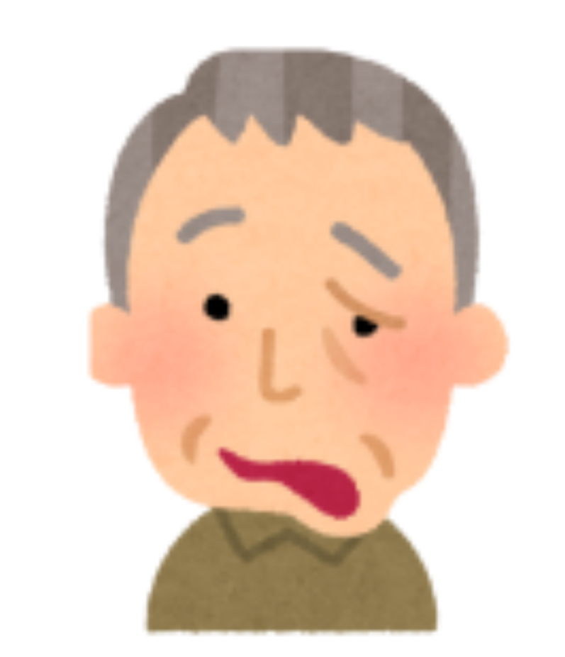
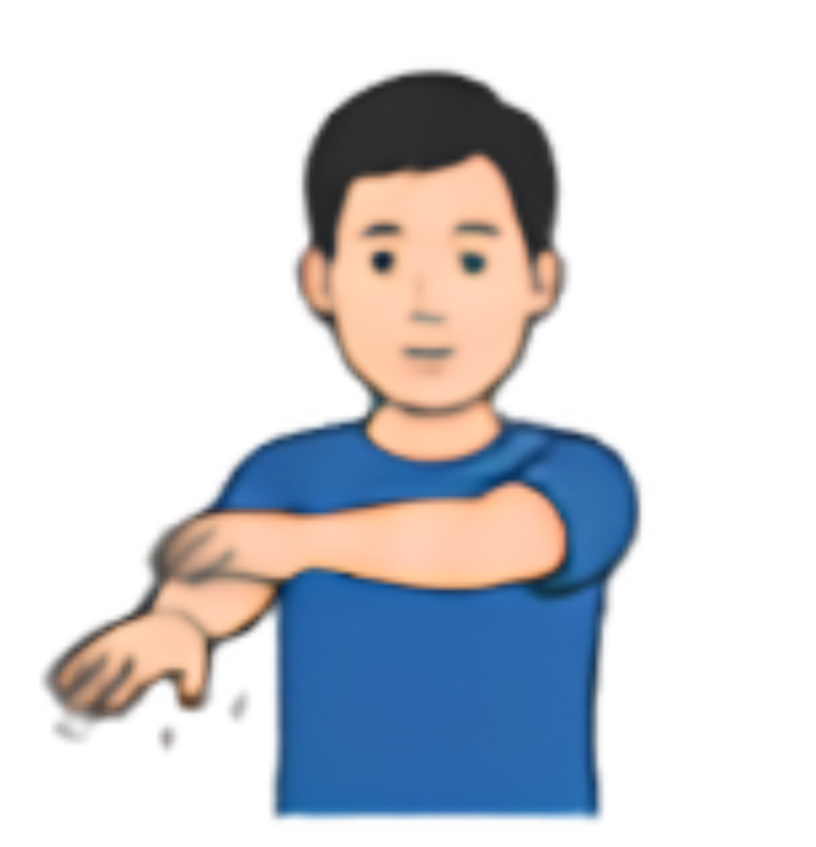
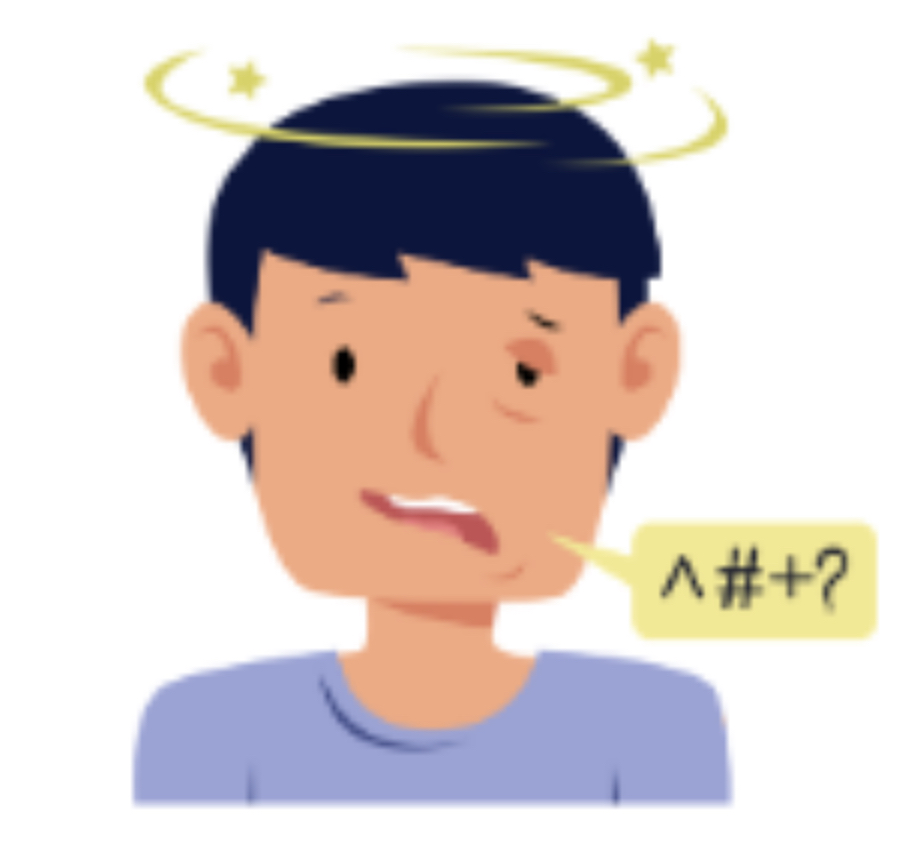

ประเมินอาการด่วนเบื้องต้นตามหลักมาตรฐาน BE FAST
เวียนศีรษะ เดินเซ มีอาการเดินไม่ตรง
หรือสูญเสียการทรงตัวลำบากแบบทันทีทันใด
ตามัว มองเห็นไม่ชัด เห็นภาพซ้อน

ปากเบี้ยว หน้าเบี้ยวข้างใดข้างหนึ่ง
ยิ้มแล้วมุมปากตก หรือชากล้ามเนื้อใบหน้า

แขนขาอ่อนแรงข้างใดข้างหนึ่ง
หรือชาครึ่งซีก

หัวใจสำคัญหลัก: กรุณาระบุเวลาปกติครั้งสุดท้ายที่พบผู้ป่วย เพื่อคำนวณสิทธิ์ Golden Hour
กรุณากดโทรออกปุ่มด้านล่างเพื่อทำการติดต่อสื่อสารและประสานงานสายด่วนแพทย์ทันทีค่ะ